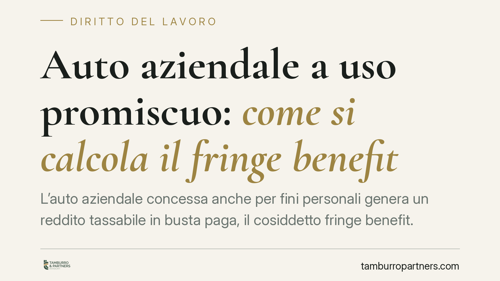

Auto aziendale a uso promiscuo: come si calcola il fringe benefit
L'auto aziendale concessa anche per fini personali genera un reddito tassabile in busta paga, il cosiddetto fringe benefit. Dal 1° gennaio 2025 il criterio di calcolo, modificato dalla Legge di Bilancio, lega l'imponibilità alle emissioni di CO2 del veicolo. Capire il meccanismo è decisivo per lavoratori e datori di lavoro, questi ultimi responsabili come sostituti d'imposta.

Il fatto
Quando il datore di lavoro assegna un'auto aziendale a uso promiscuo — cioè utilizzabile sia per l'attività lavorativa sia per esigenze private — il lavoratore riceve un vantaggio economico. Quel vantaggio costituisce retribuzione in natura (fringe benefit) e come tale va tassato.
Il punto delicato è la quantificazione. La legge non chiede di misurare l'uso privato effettivo: fissa un valore convenzionale, calcolato in modo forfettario. La Legge di Bilancio 2025 (L. 30 dicembre 2024, n. 207) ha riscritto questo criterio per i veicoli di nuova assegnazione, ancorandolo alle emissioni inquinanti.
Inquadramento normativo
La disciplina resta contenuta nell'art. 51, comma 4, lett. a) del TUIR (DPR 917/1986). La norma individua il valore imponibile applicando una percentuale al costo chilometrico di una percorrenza convenzionale di 15.000 km annui, determinato secondo le tabelle elaborate ogni anno dall'ACI e pubblicate in Gazzetta Ufficiale.
La percentuale cambia a seconda del profilo ambientale del veicolo. Nel regime introdotto dalla L. 207/2024, per i mezzi assegnati a partire dal 1° gennaio 2025 l'imponibilità è così articolata:
- 10% per i veicoli a trazione esclusivamente elettrica (BEV);
- 20% per i veicoli ibridi plug-in (PHEV);
- 50% per tutti gli altri veicoli (endotermici, ibridi non plug-in).
Il criterio, dunque, premia la mobilità a basse emissioni: più il veicolo inquina, più alto è il reddito imponibile. È bene segnalare che convivono regimi diversi a seconda della data di immatricolazione e di assegnazione, ragione per cui la verifica caso per caso è imprescindibile.
Come si calcola
Il meccanismo è lineare. Si parte dal costo chilometrico ACI relativo al modello specifico, lo si moltiplica per 15.000 km e si applica la percentuale di legge.
Esempio. Se il costo chilometrico ACI di un veicolo endotermico è pari a 0,50 euro/km, il valore convenzionale annuo è 0,50 × 15.000 = 7.500 euro. Applicando il 50%, il fringe benefit imponibile annuo è 3.750 euro, ripartito nei dodici cedolini.
Per un veicolo elettrico con lo stesso costo chilometrico, l'imponibile scende al 10%: 750 euro annui. La differenza di carico fiscale è significativa.
Da tale importo si sottrae quanto eventualmente trattenuto al lavoratore o da lui versato al datore per l'uso del mezzo, al netto IVA.
Implicazioni pratiche
Per il lavoratore. Il fringe benefit concorre a formare il reddito imponibile e aumenta la base su cui si calcolano imposte e contributi. A parità di modello, un'auto elettrica o plug-in riduce sensibilmente l'imposta rispetto a un veicolo tradizionale.
Per il datore di lavoro. In qualità di sostituto d'imposta, è tenuto a calcolare correttamente il valore convenzionale, inserirlo in busta paga e versare ritenute e contributi. Un errore nel coefficiente o nel costo chilometrico applicato espone a recuperi e sanzioni in caso di controllo dell'Agenzia delle Entrate. La scelta dei modelli da inserire nella flotta diventa anche una decisione di politica retributiva e fiscale.
Attenzione, infine, alla documentazione: la qualificazione del veicolo (elettrico, plug-in, altro) e la data di assegnazione vanno tracciate con precisione, perché determinano la percentuale applicabile.
Cosa fare in concreto
- Censire il parco auto, distinguendo i veicoli per alimentazione, data di immatricolazione e data di assegnazione al dipendente.
- Verificare il regime applicabile a ciascun mezzo, tenendo conto delle differenze tra assegnazioni ante e post 1° gennaio 2025.
- Aggiornare i cedolini con le tabelle ACI dell'anno di riferimento e il coefficiente corretto (10%, 20% o 50%).
- Riesaminare i contratti di assegnazione e gli eventuali importi addebitati al lavoratore, per calcolare correttamente l'imponibile netto.
- Documentare i criteri di calcolo adottati e conservare i riferimenti alle tabelle utilizzate; è opportuno predisporre un prospetto interno verificabile in sede di controllo.
Prima di impostare la flotta o rinnovare le assegnazioni, è prudente una valutazione congiunta tra consulente del lavoro e area fiscale, così da ponderare l'impatto sul costo aziendale e sulla retribuzione netta.
Disclaimer
Contributo informativo a cura di Tamburro & Partners Avvocati - Avv. Giuseppe Tamburro. Non costituisce parere legale.
Ogni storia di lavoro ha i suoi tempi.
Se gestisci HR e vuoi un confronto su contenzioso, ispezioni o licenziamenti, scrivi allo studio. Ti rispondiamo entro un giorno lavorativo.